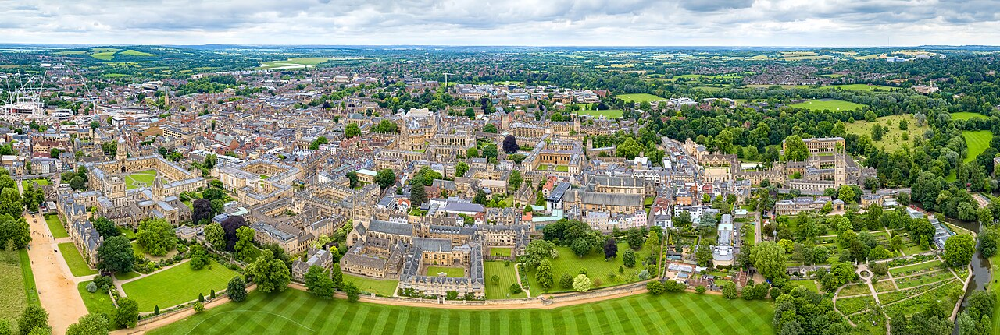
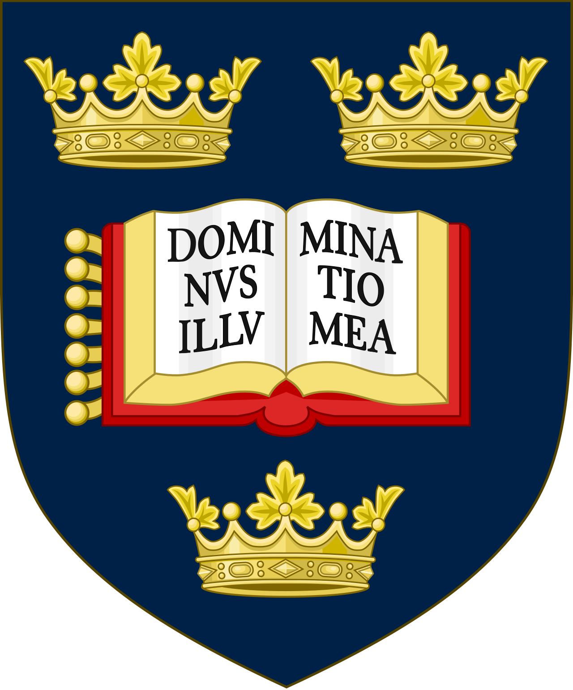
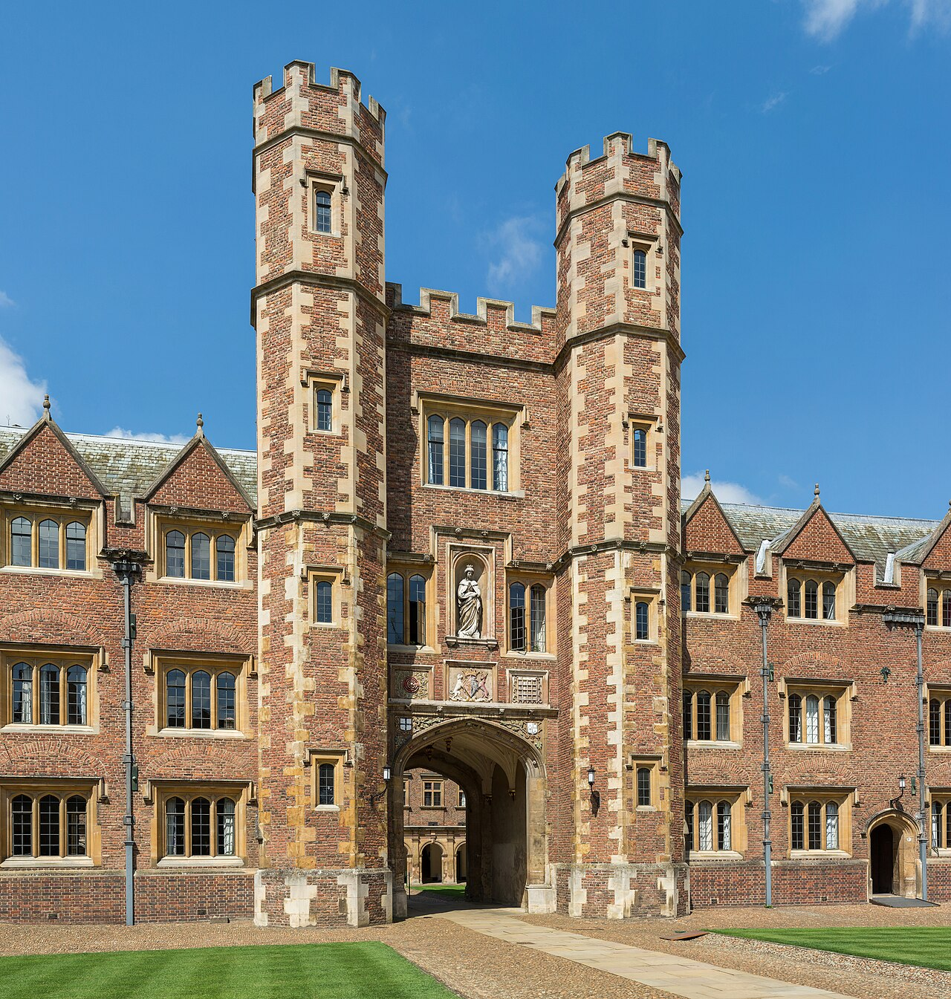
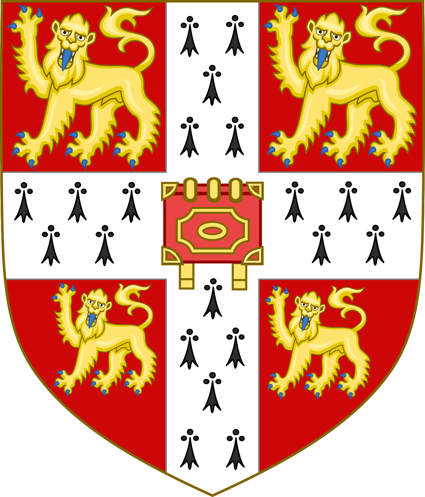
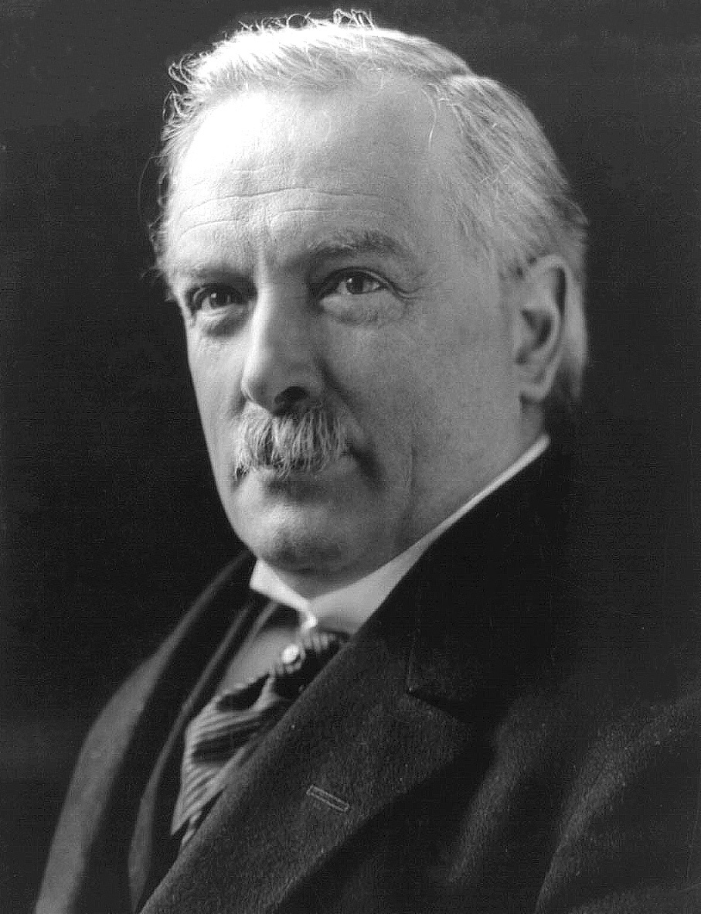
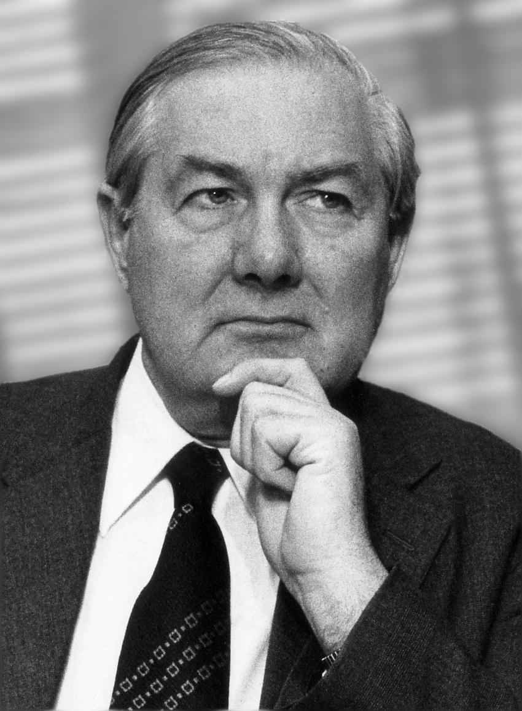
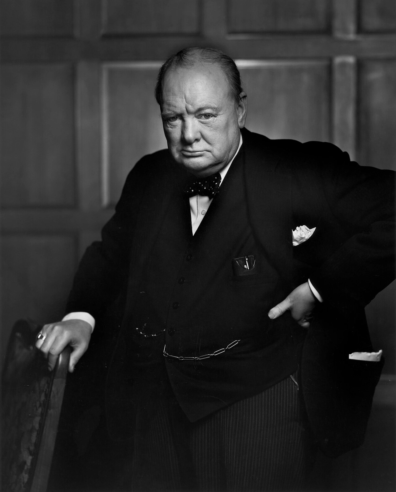
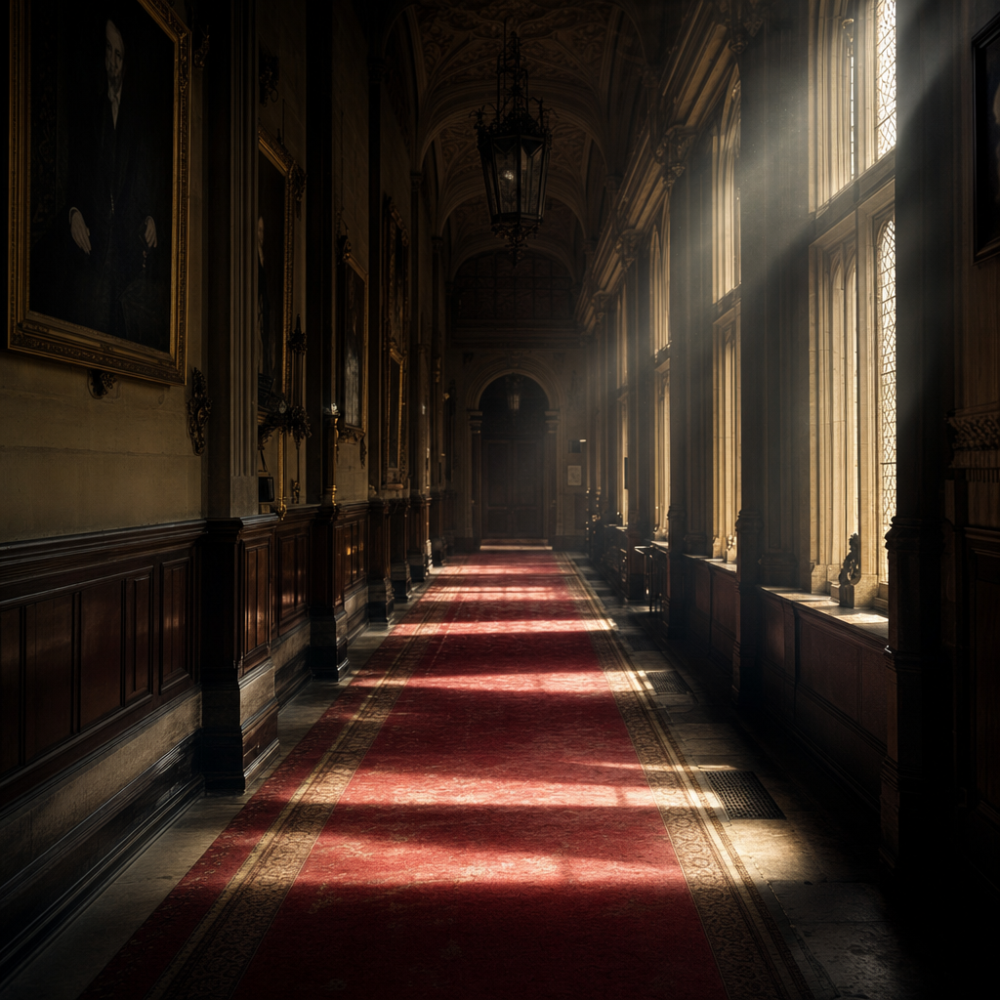

For three centuries, two universities an hour apart have quietly divided Britain's elite between them — one makes Prime Ministers, the other makes Nobel laureates. Here is the data behind the most durable fact in British public life.
Oxford has educated 31 of Britain's Prime Ministers; Cambridge just 15 — a 2.07-to-1 lead in politics. Now look at the Nobel Prize and the world flips: Cambridge claims 79 laureates to Oxford's 30, a 2.63-to-1 lead in science.
Each university dominates exactly one domain and trails badly in the other. The same two institutions, an hour apart by train, have sorted the nation's most ambitious people into two streams: rulers and discoverers.
We lump them together as “Oxbridge”, as if they were one engine of privilege. They are two — and they make opposite things.
It is the single most durable fact in British public life: Oxford is the prime-minister factory, Cambridge the Nobel factory. One number captures it — 31 PMs against 79 laureates, two towers leaning in opposite directions.
Oxford built its machine deliberately. The Oxford Union, founded in 1823 and nicknamed a “children's House of Commons”, has trained at least 12 future Prime Ministers; the PPE degree, born in the 1920s, became the unofficial finishing school of British politics, with five PPE graduates reaching Number 10.
Cambridge built the other one. Since 1904, 121 of its affiliates have won Nobel Prizes — more than any university on earth — anchored by the Cavendish Laboratory, where the electron, the neutron and the structure of DNA were found.




Oxbridge together account for 76.3% of every Prime Minister Britain has ever had.
Here is the entire bench: all 59 people who have ever held the office, each with their real portrait, the year they took power, and where they studied. It runs from Robert Walpole — Cambridge, 1721 — to Keir Starmer — Oxford, 2024.
Filter it and the dominance is plain. Thirty went to Oxford only, fourteen to Cambridge only, one to both, ten to another university, and four to none at all. Oxbridge alone accounts for 76.3% of every Prime Minister Britain has ever had.
Scroll the faces and a pattern emerges before any chart does: the dark blue of Oxford keeps coming back, again and again, into the present day.
In the eighteenth century the two universities traded the premiership almost evenly. Then something broke. The last Cambridge-linked Prime Minister to take office was Stanley Baldwin, in 1923.
Count forward from 1937 and the asymmetry is absolute: 14 Prime Ministers since then went to Oxford, and exactly zero went to Cambridge. For nearly ninety years, every PM who attended an English university attended the same one.
This is not a gentle drift. It is a hinge — a moment after which one university simply stopped producing rulers, and the other never let go.
The funnel narrows past the university gates. Thirteen Prime Ministers studied at a single Oxford college — Christ Church — more than any other college at either university, and more than most entire nations. Balliol is a distant second with four.
Below the college sits a school. Twenty of the 59 PMs were educated at Eton, and nine walked the exact same path: Eton, then Christ Church. The most-trodden route to power in Britain is one school feeding one college.
The pipeline leaks, and the leaks have names. Four PMs have no university on record — among them David Lloyd George, who left school at fifteen, and James Callaghan, too poor to afford a degree.
Ten more took a route outside Oxbridge entirely: Churchill went to Sandhurst, John Major holds no degree at all, and Gordon Brown took his PhD at Edinburgh — the only post-1937 PM to attend an English-speaking university that wasn't Oxford. These eleven names are the whole counterweight to three centuries of Oxbridge rule.




A warning before the last number. The raw “alumni on Wikidata” totals — 39,259 for Oxford, 31,284 for Cambridge — are not enrolment figures. They count only people famous enough to have a Wikidata entry, so they can never be read as “Oxford is bigger”.
But used carefully as a notability denominator, they sharpen the story. Per 1,000 recorded alumni, Oxford produces 0.79 Prime Ministers to Cambridge's 0.48 — a 1.65x political edge. For Nobels, Cambridge yields 2.53 laureates per 1,000 to Oxford's 0.76 — a 3.30x scientific edge. Correct for who gets remembered, and each university's specialism still holds.
So the cliché is wrong and right at once. “Oxbridge” is not one thing — it is two opposite machines. But one of them, the political one, has narrowed to a single university, a single college, a single school.
When 76% of every Prime Minister in history comes from two universities, and the most recent fourteen English-educated ones all come from just one, the question stops being trivia. Who runs the country, and where were they made — and is that door open, or shut?
Data: Wikidata SPARQL endpoint (free, queried 2026-05-24). PMs = holders of position Q14211 filtered to humans (Q5); university attribution via educated at (P69) following the part of (P361) college chain.
Context: The Sutton Trust — why Oxford produces so many PMs; Cambridge Nobel count; Cavendish Laboratory Nobels; PMs by education (Wikipedia); Christ Church & Eton figures.
University imagery: Oxford coat of arms (Wikimedia Commons, Public domain) & aerial campus (Chensiyuan, CC BY-SA 4.0); Cambridge coat of arms (Wikimedia Commons, CC BY-SA 3.0) & St John's College (Diliff, CC BY-SA 3.0).
AI-generated media (OpenRouter): split hero image & corridor image (GPT-5.4-image-2); hero motion clip (Veo 3.1-fast); atmosphere bed (Lyria-3-pro). All clearly labelled as illustrative.
Prime Minister portraits — Wikimedia Commons (per-image credit):
Tools: Vega-Lite v5 (charts), Web Audio API (sonification). Built by the Data2Story pipeline.